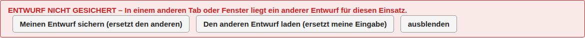
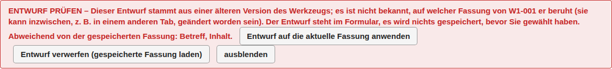

Wenn etwas nicht klappt
← Notfunk-Anleitung · Notfunk-Meldebuch öffnen
Das Meldebuch überschreibt nie stillschweigend etwas. Arbeiten Sie an einem Einsatz am besten nur in einem Fenster. Passiert es doch in zwei, helfen diese Hinweise.
„NICHT GESPEICHERT“
Die Meldung (oder der Einsatz) wurde zwischen dem Öffnen und dem Speichern anderswo geändert, zum Beispiel in einem anderen Fenster. Es wurde nichts geschrieben, die aktuelle Fassung ist geladen, und Ihre Eingabe steht noch im Formular. Prüfen Sie und speichern Sie erneut; übernommen werden dann nur die Felder, die Sie selbst geändert haben.

„ENTWURF NICHT GESICHERT“
Zwei Fenster haben je einen Entwurf für diesen Einsatz; es gibt aber nur einen. Wählen Sie „Meinen Entwurf sichern (ersetzt den anderen)“ oder „Den anderen Entwurf laden (ersetzt meine Eingabe)“.

„ENTWURF PRÜFEN“
Ein Entwurf, der eine gespeicherte Meldung bearbeitet, stammt aus der Zeit vor einem Update. Das Hinweisfeld nennt die abweichenden Felder. Mit „Entwurf auf die aktuelle Fassung anwenden“ bleibt Ihre Eingabe im Formular, mit „Entwurf verwerfen (gespeicherte Fassung laden)“ gilt die gespeicherte Fassung. Bis zur Wahl wird nichts gespeichert.

„ENTWURF – die Meldung gibt es nicht mehr“
Die Meldung, die der Entwurf bearbeitet, gibt es in diesem Einsatz nicht mehr. Der Entwurf würde als neue Meldung mit einer neuen Nummer gespeichert.
„SPEICHERN FEHLGESCHLAGEN“
Es wurde nichts gespeichert und keine Nummer vergeben; Ihre Eingabe steht noch im Formular. Laden Sie sofort eine Sicherung herunter und versuchen Sie es erneut.
„Update wartet“
Siehe Vorbereitung, Neue Version.
„localStorage (Ersatzspeicher)“ in der Fußzeile
Der Speicher des Browsers ist eingeschränkt. Verwenden Sie dann nur ein Fenster und sichern Sie häufig.
Weiter: Tastatur und Hilfe